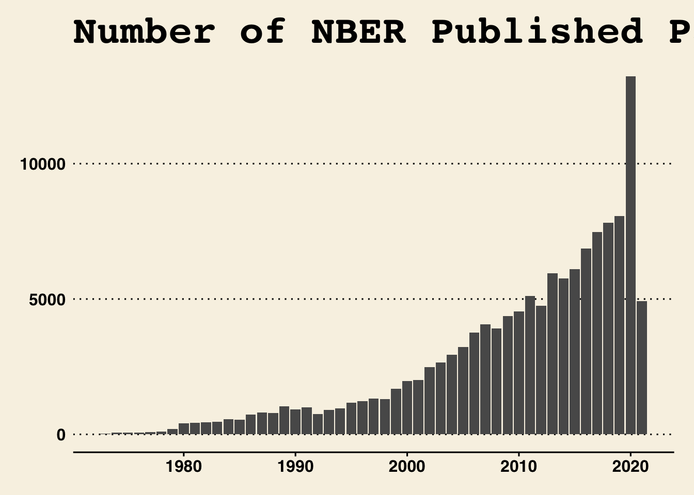

library(tidytuesdayR) #to load data
library(nberwp) #to clean and arrange data##
## Attaching package: 'nberwp'## The following objects are masked _by_ '.GlobalEnv':
##
## authors, paper_authors, paper_programs, papers, programslibrary(tidyverse)
library(ggthemes) #for cool graphs
library(vcd) # to create mosaic plots## Loading required package: gridlibrary(remotes) # to download package from github
library(tidyr)
library(devtools)## Loading required package: usethis##
## Attaching package: 'usethis'## The following object is masked from 'package:remotes':
##
## git_credentials##
## Attaching package: 'devtools'## The following objects are masked from 'package:remotes':
##
## dev_package_deps, install_bioc, install_bitbucket, install_cran,
## install_deps, install_dev, install_git, install_github,
## install_gitlab, install_local, install_svn, install_url,
## install_version, update_packages## The following object is masked from 'package:tidytuesdayR':
##
## github_pat# To download gender package; do the following:
remotes::install_github("lmullen/gender")## Skipping install of 'gender' from a github remote, the SHA1 (38a27932) has not changed since last install.
## Use `force = TRUE` to force installationremotes::install_github("lmullen/genderdata")## Skipping install of 'genderdata' from a github remote, the SHA1 (64e6a213) has not changed since last install.
## Use `force = TRUE` to force installation#require(devtools)
#install_version("gender", version = "0.5.4", repos = "https://rdocumentation.org/packages/gender/versions/0.5.4")
library(gender)
library(genderdata)Follow the instructions on the tidytuesday github. I ended up manually downloading from the pathway because the tidyverse data was not coming up for week 40.
This data comes from the National Bureau of Economic Research (NBER). In the original data set there are a couple individual data sets, that look at papers published, title, name, and date published. For more information check out the data dictionary included in the github repository.
# The following was taken from the Tidy Tuesday github
papers <- readr::read_csv('https://raw.githubusercontent.com/rfordatascience/tidytuesday/master/data/2021/2021-09-28/papers.csv')## Rows: 29434 Columns: 4## ── Column specification ────────────────────────────────────────────────────────
## Delimiter: ","
## chr (2): paper, title
## dbl (2): year, month##
## ℹ Use `spec()` to retrieve the full column specification for this data.
## ℹ Specify the column types or set `show_col_types = FALSE` to quiet this message.authors <- readr::read_csv('https://raw.githubusercontent.com/rfordatascience/tidytuesday/master/data/2021/2021-09-28/authors.csv')## Rows: 15437 Columns: 4## ── Column specification ────────────────────────────────────────────────────────
## Delimiter: ","
## chr (4): author, name, user_nber, user_repec##
## ℹ Use `spec()` to retrieve the full column specification for this data.
## ℹ Specify the column types or set `show_col_types = FALSE` to quiet this message.programs <- readr::read_csv('https://raw.githubusercontent.com/rfordatascience/tidytuesday/master/data/2021/2021-09-28/programs.csv')## Rows: 21 Columns: 3## ── Column specification ────────────────────────────────────────────────────────
## Delimiter: ","
## chr (3): program, program_desc, program_category##
## ℹ Use `spec()` to retrieve the full column specification for this data.
## ℹ Specify the column types or set `show_col_types = FALSE` to quiet this message.paper_authors <- readr::read_csv('https://raw.githubusercontent.com/rfordatascience/tidytuesday/master/data/2021/2021-09-28/paper_authors.csv')## Rows: 67090 Columns: 2## ── Column specification ────────────────────────────────────────────────────────
## Delimiter: ","
## chr (2): paper, author##
## ℹ Use `spec()` to retrieve the full column specification for this data.
## ℹ Specify the column types or set `show_col_types = FALSE` to quiet this message.paper_programs <- readr::read_csv('https://raw.githubusercontent.com/rfordatascience/tidytuesday/master/data/2021/2021-09-28/paper_programs.csv')## Rows: 53996 Columns: 2## ── Column specification ────────────────────────────────────────────────────────
## Delimiter: ","
## chr (2): paper, program##
## ℹ Use `spec()` to retrieve the full column specification for this data.
## ℹ Specify the column types or set `show_col_types = FALSE` to quiet this message.The github repository includes instruction on cleaning data. See below.
joined_df <- left_join(papers, paper_authors) %>%
left_join(authors) %>%
left_join(paper_programs) %>%
left_join(programs)%>%
mutate(
catalogue_group = str_sub(paper, 1, 1),
catalogue_group = case_when(
catalogue_group == "h" ~ "Historical",
catalogue_group == "t" ~ "Technical",
catalogue_group == "w" ~ "General"
),
.after = paper
) ## Joining, by = "paper"## Joining, by = "author"## Joining, by = "paper"## Joining, by = "program"joined_df## # A tibble: 130,081 × 12
## paper catalogue_group year month title author name user_nber user_repec
## <chr> <chr> <dbl> <dbl> <chr> <chr> <chr> <chr> <chr>
## 1 w0001 General 1973 6 Educatio… w0001… Fini… finis_we… <NA>
## 2 w0002 General 1973 6 Hospital… w0002… Barr… barry_ch… pch425
## 3 w0003 General 1973 6 Error Co… w0003… Swar… swarnjit… <NA>
## 4 w0004 General 1973 7 Human Ca… w0004… Lee … <NA> pli669
## 5 w0005 General 1973 7 A Life C… w0005… Jame… james_sm… psm28
## 6 w0006 General 1973 7 A Review… w0006… Vict… victor_z… <NA>
## 7 w0007 General 1973 8 The Defi… w0007… Lewi… <NA> <NA>
## 8 w0008 General 1973 9 Multinat… w0008… Merl… <NA> <NA>
## 9 w0008 General 1973 9 Multinat… w0008… Robe… robert_l… pli259
## 10 w0009 General 1973 9 From Age… w0004… Lee … <NA> pli669
## # … with 130,071 more rows, and 3 more variables: program <chr>,
## # program_desc <chr>, program_category <chr>#In this code we are basically joining all the papers together and renaming the catalogue group
summary(joined_df)## paper catalogue_group year month
## Length:130081 Length:130081 Min. :1973 Min. : 1.000
## Class :character Class :character 1st Qu.:2005 1st Qu.: 4.000
## Mode :character Mode :character Median :2013 Median : 6.000
## Mean :2010 Mean : 6.515
## 3rd Qu.:2018 3rd Qu.: 9.000
## Max. :2021 Max. :12.000
## title author name user_nber
## Length:130081 Length:130081 Length:130081 Length:130081
## Class :character Class :character Class :character Class :character
## Mode :character Mode :character Mode :character Mode :character
##
##
##
## user_repec program program_desc program_category
## Length:130081 Length:130081 Length:130081 Length:130081
## Class :character Class :character Class :character Class :character
## Mode :character Mode :character Mode :character Mode :character
##
##
## str(joined_df)## tibble [130,081 × 12] (S3: tbl_df/tbl/data.frame)
## $ paper : chr [1:130081] "w0001" "w0002" "w0003" "w0004" ...
## $ catalogue_group : chr [1:130081] "General" "General" "General" "General" ...
## $ year : num [1:130081] 1973 1973 1973 1973 1973 ...
## $ month : num [1:130081] 6 6 6 7 7 7 8 9 9 9 ...
## $ title : chr [1:130081] "Education, Information, and Efficiency" "Hospital Utilization: An Analysis of SMSA Differences in Hospital Admission Rates, Occupancy Rates and Bed Rates" "Error Components Regression Models and Their Applications" "Human Capital Life Cycle of Earnings Models: A Specific Solution and Estimation" ...
## $ author : chr [1:130081] "w0001.1" "w0002.1" "w0003.1" "w0004.1" ...
## $ name : chr [1:130081] "Finis Welch" "Barry R Chiswick" "Swarnjit S Arora" "Lee A Lillard" ...
## $ user_nber : chr [1:130081] "finis_welch" "barry_chiswick" "swarnjit_arora" NA ...
## $ user_repec : chr [1:130081] NA "pch425" NA "pli669" ...
## $ program : chr [1:130081] NA NA NA NA ...
## $ program_desc : chr [1:130081] NA NA NA NA ...
## $ program_category: chr [1:130081] NA NA NA NA ...First I want to get a quick visualization of the years that papers were published
ggplot(joined_df, aes(x=year)) +
geom_bar() +
labs(title= "Number of NBER Published Papers by Year") +
xlab("Year") + ylab("Number of Papers Published") +
theme_wsj() #Just discovered this theme and I will never go back!
Looks like there were quite a few papers published in 2020. Lets take a close look at the data from 2020
newyr <- joined_df[ which(joined_df$year=="2020"), ]I dont nknow too much about the categories, so lets look at them individually
table(newyr$program_desc)##
## Asset Pricing
## 685
## Children
## 436
## Corporate Finance
## 768
## Development Economics
## 627
## Development of the American Economy
## 280
## Economic Fluctuations and Growth
## 1286
## Economics of Aging
## 360
## Economics of Education
## 443
## Environment and Energy Economics
## 306
## Health Care
## 604
## Health Economics
## 1022
## Industrial Organization
## 459
## International Finance and Macroeconomics
## 560
## International Trade and Investment
## 403
## Labor Studies
## 1322
## Law and Economics
## 314
## Monetary Economics
## 669
## Political Economics
## 516
## Productivity, Innovation, and Entrepreneurship
## 618
## Public Economics
## 1437
## Technical Working Papers
## 102table(newyr$program)##
## AG AP CF CH DAE DEV ED EEE EFG HC HE IFM IO ITI LE LS
## 360 685 768 436 280 627 443 306 1286 604 1022 560 459 403 314 1322
## ME PE POL PR TWP
## 669 1437 516 618 102table(newyr$program_category)##
## Finance Macro/International Micro
## 1453 2918 8744# The most interesting seem to be program_category & program_desc
# Since there is not to much flexibility we can do with categorical dataSince this has a good bit of categorical data, I am going to use the “gender” package to determine the gender of the authors For some background on the package, it was created by @lmullen and uses historical data to infer sex assigned at birth based on first names. Since it was taken down from ropensci.org, you need to download it directly from @lmullens github.
When loading this package, make a note the description warning as it is important. I personally would not use this package outside of this class exercise and only for large population.
"Infers state-recorded gender categories from first names and dates of birth using historical
datasets. By using these datasets instead of lists of male and female names,
this package is able to more accurately infer the gender of a name, and it
is able to report the probability that a name was male or female. GUIDELINES:
This method must be used cautiously and responsibly."} # First we need to split names into first and last
namesplit <- extract(joined_df, name, c(“FirstName”, “LastName”), “([^ ]+) (.*)“)
results <- namesplit %>% distinct(FirstName, year) %>% rowwise() %>% do(results = gender(namesplit\(FirstName, years = namesplit\)year, method = “ssa”)) %>% do(bind_rows(namesplit$results))
Now I want to see the number of papers published by females vs. males over time
ggplot(results, aes(x=year_max, fill=gender)) + geom_bar() + labs(title= “Published NBER Papers by Gender from 1973-2021”) + xlab(“Year”) + ylab(“Number of Papers Published”) +
theme_wsj() + scale_fill_brewer(palette = “Set1”)
`